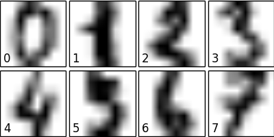
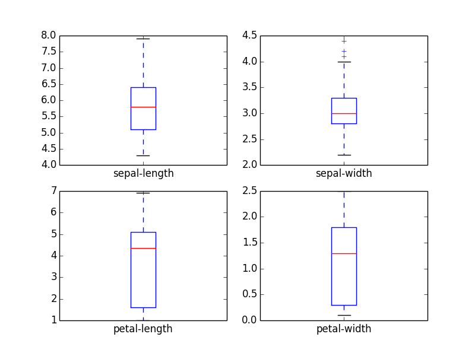
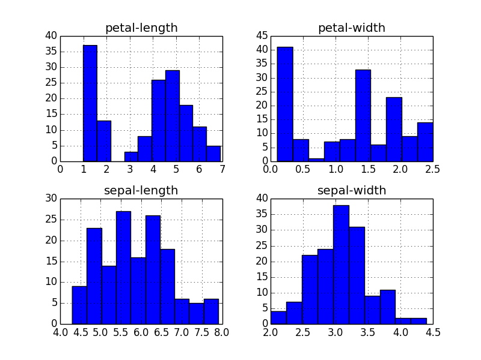
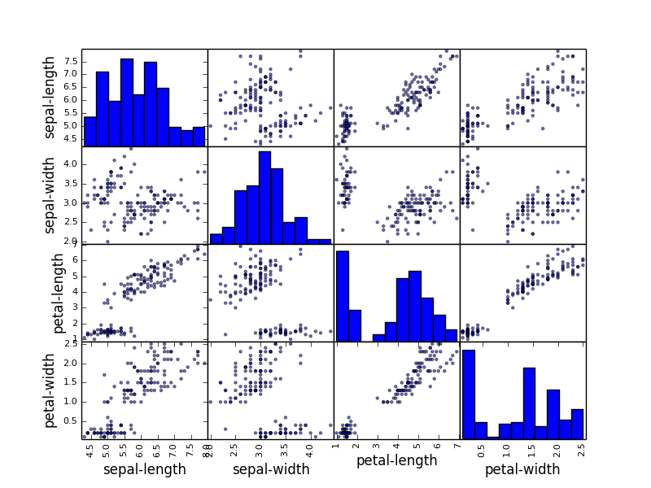
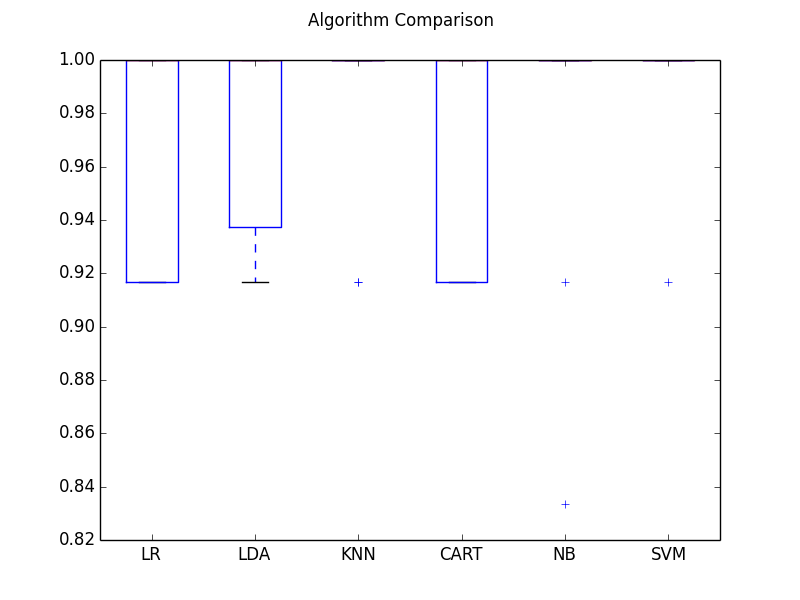

loading datasets, evaluate algorithms and present results.
from sklearn import datasets import matplotlib.pyplot as plt digits = datasets.load_digits() fig = plt.figure(figsize=(4, 2)) fig.subplots_adjust(left=0, right=1, bottom=0, top=1, hspace=0.05,wspace=0.05) for i in range(8): ax = fig.add_subplot(2, 4, i + 1, xticks = [], yticks = []) ax.imshow(digits.images[i], cmap = plt.cm.binary) ax.text(0, 7, str(digits.target[i])) plt.show()
這段程式看起來有點難懂，讓我們分開來看：
• 載入 matplotlib 套件。
• 設定一個長 2 吋，寬 4 吋的空白畫布，準備待會將子圖形畫在上面。
• 調整子圖形的一些參數。
• 使用一個 for 迴圈開始要將空白畫布填滿。
• 初始化 8 個子圖形，並依序填入 2 x 4 網格中的每一格。
• 最後畫龍點睛的部分是在每個子圖形 (0, 7) 的位置（左下角）顯示目標值。
• 別忘了使用 plt.show() 將畫好的圖顯示出來！
A machine learning project may not be linear, but it has a number of well known steps:
1. Define Problem.
2. Prepare Data.
3. Evaluate Algorithms.
4. Improve Results.
5. Present Results.
You do not need to understand everything. (at least not right now) Your goal is to run through the tutorial end-to-end and get a result.
You do not need to understand everything on the first pass. List down your questions as you go. Make heavy use of the help(“FunctionName”) help syntax in Python to learn about all of the functions that you’re using.
You do not need to know how the algorithms work. It is important to know about the limitations and how to configure machine learning algorithms. But learning about algorithms can come later. You need to build up this algorithm knowledge slowly over a long period of time. Today, start off by getting comfortable with the platform.
You do not need to be a Python programmer.
You do not need to be a machine learning expert.
We did not cover all of the steps in a machine learning project because this is your first project and we need to focus on the key steps. Namely, loading data, looking at the data, evaluating some algorithms and making some predictions. In later tutorials we can look at other data preparation and result improvement tasks.
Let's start to build a machine learning project.
# Check the versions of libraries # Python version import sys print('Python: {}'.format(sys.version)) # scipy import scipy print('scipy: {}'.format(scipy.__version__)) # numpy import numpy print('numpy: {}'.format(numpy.__version__)) # matplotlib import matplotlib print('matplotlib: {}'.format(matplotlib.__version__)) # pandas import pandas print('pandas: {}'.format(pandas.__version__)) # scikit-learn import sklearn print('sklearn: {}'.format(sklearn.__version__))
And you will begin to load the library
# Load libraries import pandas from pandas.tools.plotting import scatter_matrix import matplotlib.pyplot as plt from sklearn import model_selection from sklearn.metrics import classification_report from sklearn.metrics import confusion_matrix from sklearn.metrics import accuracy_score from sklearn.linear_model import LogisticRegression from sklearn.tree import DecisionTreeClassifier from sklearn.neighbors import KNeighborsClassifier from sklearn.discriminant_analysis import LinearDiscriminantAnalysis from sklearn.naive_bayes import GaussianNB from sklearn.svm import SVC
After that, you will load the datasets
# Load dataset url = "https://archive.ics.uci.edu/ml/machine-learning-databases/ iris/iris.data" names = ['sepal-length', 'sepal-width', 'petal-length', 'petal-width', 'class'] dataset = pandas.read_csv(url, names=names)
print the shape, head, descriptions, and class distribution.
# shape print(dataset.shape)
# head print(dataset.head(20))
# descriptions print(dataset.describe())
# class distribution print(dataset.groupby('class').size())
Load the box and whisker plots, histograms, scatter plot matrix.
# box and whisker plots dataset.plot(kind='box', subplots=True, layout=(2,2), sharex=False, sharey=False) plt.show()
# histograms dataset.hist() plt.show()
# scatter plot matrix scatter_matrix(dataset) plt.show()
Split-out validation dataset.
# Split-out validation dataset array = dataset.values X = array[:,0:4] Y = array[:,4] validation_size = 0.20 seed = 7 X_train, X_validation, Y_train, Y_validation = model_selection.train_test_split(X, Y, test_size= validation_size, random_state=seed)
Test options and evaluation metric.
# Test options and evaluation metric seed = 7 scoring = 'accuracy'
Spot check Algorithms, compare Algorithms, and make prediction on validation dataset.
# Spot Check Algorithms models = [] models.append(('LR', LogisticRegression())) models.append(('LDA', LinearDiscriminantAnalysis())) models.append(('KNN', KNeighborsClassifier())) models.append(('CART', DecisionTreeClassifier())) models.append(('NB', GaussianNB())) models.append(('SVM', SVC())) # evaluate each model in turn results = [] names = [] for name, model in models: kfold = model_selection.KFold(n_splits=10, random_state=seed) cv_results = model_selection.cross_val_score(model, X_train, Y_train, cv=kfold, scoring=scoring) results.append(cv_results) names.append(name) msg = "%s: %f (%f)" % (name, cv_results.mean(), cv_results.std()) print(msg)
LR: 0.966667 (0.040825) LDA: 0.975000 (0.038188) KNN: 0.983333 (0.033333) CART: 0.975000 (0.038188) NB: 0.975000 (0.053359) SVM: 0.981667 (0.025000)
# Compare Algorithms fig = plt.figure() fig.suptitle('Algorithm Comparison') ax = fig.add_subplot(111) plt.boxplot(results) ax.set_xticklabels(names) plt.show()
# Make predictions on validation dataset knn = KNeighborsClassifier() knn.fit(X_train, Y_train) predictions = knn.predict(X_validation) print(accuracy_score(Y_validation, predictions)) print(confusion_matrix(Y_validation, predictions)) print(classification_report(Y_validation, predictions))
The final project's data presented as follows:
   Paul is an Engineering student study in Robotic Engineering in Tamkang University in 2015. His research area is in Robotic Vision and Control. He was accepted by Master Science Computer Science program in Illinois Institute of Technology at Fall 2018. His goal is to become a software engineer working on the area of robotic vision.